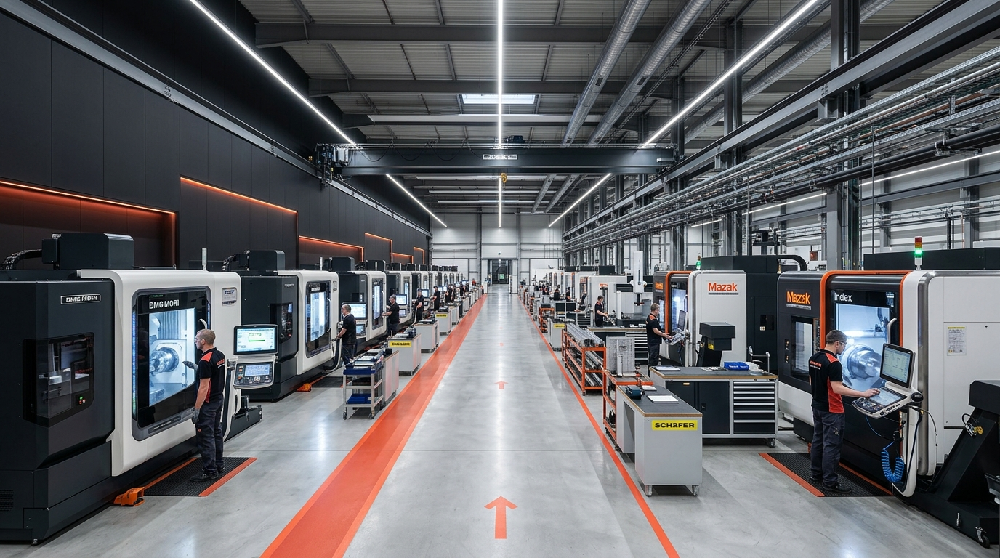

Modern Infrastructure. Precision Manufacturing.
SAM PRECISION combines manufacturing machinery, skilled personnel, and inspection facilities to support the production of precision-machined components.
Modern Infrastructure
Operating from an owned facility in Peenya Industrial Area, one of India's major machine-tool manufacturing hubs.
SAM PRECISION Facility
Peenya Industrial Area Hub · Bengaluru- Registered Office & Works: No. 110 & 111, Shirdi Saiibaba Layout, Sri Anupama Vidya Mandir Cross Road, Andrahalli Main Road, Vishwaneedam Post, Bengaluru – 560091, Karnataka, India.
- Total Area: Approximately 2,500 sq. ft. of fully owned facility space.
- CAD Operations: Fully computer-aided office with CAD support for design and blueprint verification.
- In-House Inspection: Dedicated inspection room equipped with digital verniers, micrometers, height gauges, bore gauges, and slip gauges.
- Core Production: Precision-machined components, hydraulic cylinders, PB bushes, jigs, fixtures, and special machine-building components.
Machinery & Equipment
Machinery documented in the SAM PRECISION company profile supporting precision machining operations.
VMC (Vertical Machining Centre)

- Type: Vertical Machining Centre
- Capability: High-precision milling, boring, and contouring
- Application: Complex machine parts, jigs, and fixture components
CNC Turning Centre

- Type: High-Precision CNC Turning Centre
- Capability: Precision outer/inner diameter turning, facing & threading
- Application: Shafts, pins, bushings, and cylindrical parts
BFW Milling Machine

- Make: BFW (Bharat Fritz Werner)
- Capability: Heavy-duty & accurate surface milling
- Application: Structural plates, base blocks, and tooling
HMT Milling Machine
- Make: HMT
- Capability: Universal milling, slotting, and angular facing
- Application: Machine components, keyways, and guide slots
Lathe Machine

- Type: Precision Center Lathe
- Capability: Turning, facing, boring, taper turning, and grooving
- Application: General machining, PB bushes, and prototype shafts
Surface Grinding Machine
- Type: Precision Surface Grinder
- Capability: Fine surface finishing and high planar flatness
- Application: Die plates, guide rails, and precision ground components
DRO Drilling Machine
- Feature: Digital Readout (DRO) Positioning
- Capability: Accurate hole coordinate positioning and drilling
- Application: Jigs, fixtures, flange pitch circles, and tooling
Pillar Type Drilling Machine
- Type: Heavy-Duty Pillar Drilling Machine
- Capability: Deep hole drilling, reaming, and counterboring
- Application: Medium and heavy machined components
Lean Workplace Standards
We execute manufacturing orders following structured workplace protocols to ensure component cleanliness, dimensional accuracy, and zero contamination.
Milling, turning, and grinding equipment are systematically arranged for smooth workflow and reduced turnaround times.
Raw materials including alloy steels, phosphor bronze, and stainless steels are tracked with material certs and segregated.
In-house measuring instruments are maintained and regularly calibrated for precision verification.
Skilled Technical Team
Manufacturing precision parts demands expert human oversight. SAM PRECISION brings together experienced machining operators and technicians.
Skilled operators who program and execute precision milling, turning, and tight-tolerance machining cycles.
Experienced technicians skilled in manufacturing custom jigs, fixtures, and special machine-building components.
Inspectors who verify incoming raw materials, in-process dimensions, and final finished products against customer blueprints.
Ready to Discuss Your Next Project?
Contact SAM PRECISION to discuss your requirements for precision-machined components, hydraulic cylinders, PB bushes, jigs, fixtures, and machine components.